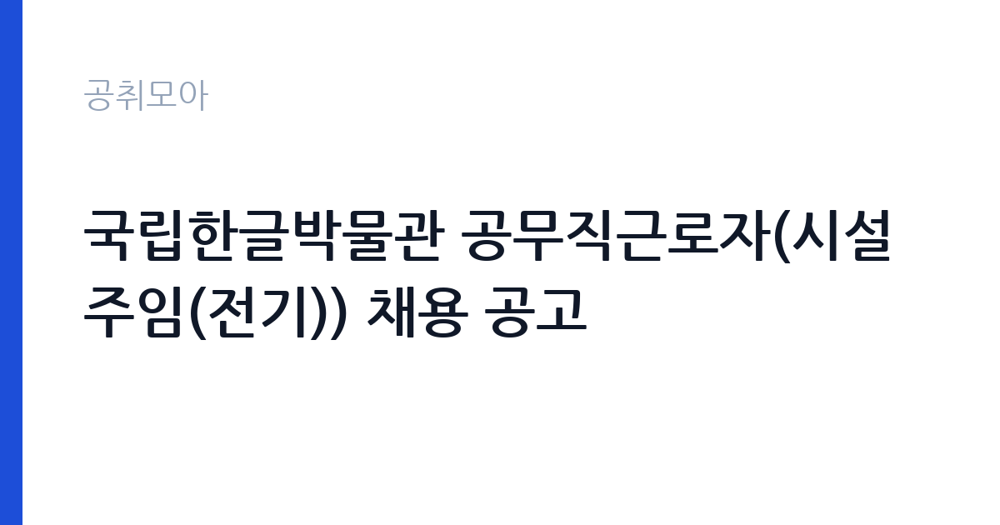

[국가기관] 국립한글박물관 공무직근로자(시설주임(전기)) 채용 공고
문화체육관광부 국립한글박물관 · 서울 · 마감 2026-10-26 (D-11) · 출처 나라일터

한눈에 보는 모집 조건
| 기관 | 문화체육관광부 국립한글박물관 |
|---|---|
| 공고명 | 국립한글박물관 공무직근로자(시설주임(전기)) 채용 공고 |
| 고용형태 | 공무직 |
| 근무지 | 서울 |
| 게시일 | 2026-10-16 |
| 마감일 | 2026-10-26 (D-11) |
지원자격, 이렇게 읽으세요
- 공무직 1명
- 접수 ~2026-10-26 마감
- 세부 조건은 원문 공고문 확인
지원자격의 핵심은 첨부된 공고문 파일에 있습니다. 나라일터 요약에는 자격요건이 첨부파일 참조로만 적혀 있어 본문만 보고 지원하는 것은 위험합니다. 한글박물관 시설주임 전례를 보면 전기 분야 자격증과 실무경력을 요구하는 구조이며 이번에도 전기 관련 국가기술자격 소지 여부가 관건이 될 가능성이 큽니다. 이메일 접수 시 파일명 규칙 같은 형식 요건이 있었던 회차도 있으니 첨부 파일의 접수 유의사항을 끝까지 읽으시고 서류를 준비하시기 바랍니다.
이 공고의 포인트
이 공고의 가장 큰 매력은 국립 박물관 소속의 정년 보장 공무직이라는 점입니다. 박물관 전기직은 일반 건물 관리와 달리 전시조명과 항온항습 설비의 전원 관리라는 특수성이 있어 경력으로 쌓였을 때 희소성이 생깁니다. 근무지가 서울 용산이라는 점도 통근 면에서 장점입니다. 다만 채용인원이 1명이라 서류 경쟁이 치열할 수 있으니 자격증과 경력을 증빙할 서류를 빠짐없이 갖추시는 것이 중요합니다.
전형은 어떻게 진행되나
접수는 10월 19일부터 10월 26일까지 이메일과 등기우편으로 받습니다. 등기우편은 마감일 도착분 기준인 경우가 많으니 막판 발송은 피하시고 가급적 이메일 접수를 먼저 마치시기 바랍니다. 전형 절차의 세부 단계는 첨부 공고문에서 확인하셔야 하며 공무직 채용 관례상 서류전형 후 면접시험 순으로 진행될 가능성이 큽니다. 채용 담당 부서는 국립한글박물관 기획운영과이며 문의 전 공고문을 먼저 정독하시는 것이 좋습니다.
원문에서 확인한 전형 방식
ㅇ채용분야: 공무직근로자(시설주임(전기)) 1인 ㅇ고용형태: 정규직 ㅇ자격요건: 첨부파일 참조 ㅇ접수기간: 2026. 10. 19. ~ 10. 26. ㅇ지원방법: email 및 등기우편 접수 *상세사항은 첨부파일 참조
이런 분께 추천해요
- 전기 분야 국가기술자격을 보유하고 공공기관 시설관리로 진입하려는 분께 적합합니다.
- 박물관과 전시시설의 전기 설비라는 특수 분야 경력을 쌓고 싶은 분께 권합니다.
- 서울 용산 근무와 공무직의 고용 안정성을 중시하는 분께 잘 맞습니다.
지원 전 체크리스트
- 공고문 hwpx와 pdf 두 파일을 모두 내려받아 자격요건과 접수방법을 대조했습니다.
- 보유한 전기 자격증이 공고의 자격요건에 정확히 부합하는지 원문 문구로 확인했습니다.
- 등기우편 접수 시 마감일 도착 기준인지 발송 기준인지 공고문에서 확인했습니다.
- 이메일 접수 후에는 수신 확인 여부를 담당 부서에 문의해 접수 누락을 막았습니다.
모집 일정과 제출 타이밍
공고 등록일은 10월 16일이며 원서접수는 10월 19일부터 10월 26일까지 8일간 진행됩니다. 접수 시작 전에 자격증 사본과 경력증명서 등 증빙서류를 미리 발급받아 두시면 여유 있게 지원하실 수 있습니다. 등기우편으로 접수하실 분은 주말과 마감일 혼잡을 감안해 최소 이틀 전에는 발송하시기 바랍니다. 최종 마감 시각은 첨부 공고문의 접수 마감 항목에서 반드시 확인하시기 바랍니다.
직무 이해하기: 국가기관
시설주임(전기)은 박물관 건물 전체의 전기 설비를 책임지는 실무직입니다. 수변전설비 점검과 전시조명 전원 관리가 기본이며 항온항습기와 소방 전기 설비의 정상 작동을 수시로 확인합니다. 전시 교체나 특별전 기간에는 조명 재배선과 임시 전원 작업이 늘어나고 야간이나 휴일에 비상출동이 발생할 수 있습니다. 박물관은 유물 보존을 위해 정전과 온습도 변화에 민감하므로 평상시 예방점검 기록을 꼼꼼히 남기는 습관이 중요합니다.
자기소개서 작성 팁
시설직 자기소개서에서는 자격 취득 과정과 실제 고장 대응 경험을 구체적으로 쓰셔야 합니다. 언제 어떤 설비에서 어떤 고장이 났고 본인이 어떤 순서로 조치했는지를 시간 순으로 적으면 실무 역량이 드러납니다. 박물관 지원 동기에는 전시와 유물 보존을 뒷받침하는 전기 안전의 중요성을 언급하시면 진정성이 생깁니다. 안전수칙 준수 사례와 협업 경험을 한 가지씩만 넣어도 분량이 충분하니 나열식으로 늘리지는 마시기 바랍니다.
면접 준비 포인트
면접에서는 전기 기초 실무 질문이 나올 수 있습니다. 차단기 용량 선정과 절연저항 측정 같은 기본기를 묻는 질문에 현장 용어로 답하시는 연습이 필요합니다. 박물관 시설의 특성을 이해하고 있는지도 보므로 전시조명과 항온항습 설비의 전원 관리 포인트를 미리 정리해 두시기 바랍니다. 비상출동과 휴일 근무가 가능한지 묻는 질문에는 가정 상황까지 고려한 현실적인 답변을 준비하시면 신뢰를 얻으실 수 있습니다.
급여·근무조건 읽는 법
이번 공고 본문에는 보수표가 공개되어 있지 않아 정확한 급여는 첨부 공고문에서 확인하셔야 합니다. 참고로 유사 국가기관 공무직 임금표인 산림청 2026년 공무직근로자 임금표에서는 시설 직종 1호봉 월임금액이 2,157,000원으로 고시되어 있습니다. 출처는 산림청 누리집에 게시된 2026년 공무직근로자 임금표이며 기관마다 임금표가 다르므로 한글박물관의 실제 보수는 원문에서 확인하셔야 합니다. 일반적으로 기본급에 자격증 수당과 명절휴가비 등이 더해지며 실수령액은 4대 보험과 세금 공제 후 금액이 됩니다. 경쟁률과 합격선도 공고에 공개되지 않았으므로 원문과 기관 문의를 통해 확인하시기 바랍니다.
자주 묻는 질문
- 공무직의 정년이 보장되나요?
공무직은 기간의 정함이 없는 근로자로 공고문에 정규직으로 명시된 경우 정년까지 근무할 수 있습니다. 정년 연령과 세부 규정은 기관 취업규칙에 따르므로 첨부 공고문과 기관 문의로 확인하시기 바랍니다. - 전기 자격증이 반드시 있어야 하나요?
자격요건은 첨부파일 참조로만 안내되어 있어 원문 확인이 필수입니다. 시설주임(전기) 직무 특성상 전기 분야 자격증을 요구할 가능성이 크니 공고문 파일의 자격요건 항목을 먼저 보시기 바랍니다. - 근무지는 어디인가요?
근무지역은 서울특별시 용산구이며 국립한글박물관 청사에서 근무합니다. 용산역 인근이라 대중교통 접근성이 좋은 편이나 출퇴근 시간대 혼잡은 감안하시기 바랍니다.
함께 보면 좋은 공고
[국가기관] 과학기술정보통신부 기간제 근로자(비서 및 행정지원) 채용 공고 — 마감 2026-10-26[국가기관] [공군 제11전투비행단] 공무직근로자(시설관리원) 채용 공고 — 마감 2026-10-29[국가기관] [공군 제11전투비행단] 공무직근로자(청소관리원) 채용 공고 — 마감 2026-10-29출처: 나라일터 공개정보를 바탕으로 공취모아가 정리한 안내글입니다. 모집 조건·일정은 변경될 수 있으니 지원 전 반드시 원문 공고문을 확인하세요. 본 글은 정보 제공용이며 합격을 보장하지 않습니다.